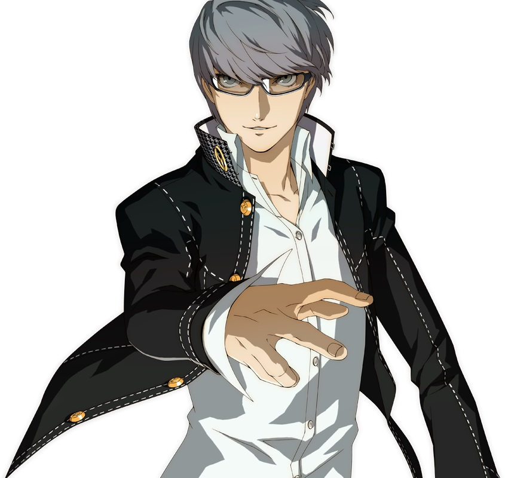

PERSONA 4
HISTORIA
Persona 4 se lleva a cabo en un pueblo ficticio de Japón conocido como Inaba (稲葉市 Inaba-shi?), y se encuentra en unas llanuras de inundación; tiene su propio instituto escolar y distritos de venta. Homicidios inexplicables se han estado presentando en este pequeño pueblo, donde los cuerpos de las víctimas aparecen colgando de antenas de televisión; se desconoce el motivo/causa de su muerte.7 Al mismo tiempo, corre el rumor de que ver la tele apagada en una medianoche lluviosa revelará el alma gemela de esa persona.8 El juego sigue a los personajes al Mundo TV, una dimensión lleno de criaturas llamadas Sombras.
GAMEPLAY
Dentro del Mundo TV el jugador armará su equipo, consistiendo en el protagonista y otros tres personajes, para explorar las mazmorras construidas aleatoriamente, cada una con características especiales de acuerdo a la víctima secuestrada. En cada piso de la mazmorra, el jugador encontrará Sombras vagando, así como tesoros que contienen objetos y equipamiento. Los jugadores progresarán por los pisos tras encontrar escaleras que los lleven al siguiente espacio hasta llegar al último nivel donde pelearan con el Jefe.5 Entrarán en la fase de combate cuando el personaje se acerca a los enemigos. Los personajes pueden sacar ventaja cuando atacan por la espalda a una Sombra, del mismo modo, si un enemigo ataca por detrás al equipo, le dará a las Sombras una ventaja. Similar al sistema "Press Turn" de otros títulos Shin Megami Tensei, las batallas están basadas por turnos, los personajes pelean utilizando armas, objetos o las habilidades especiales de sus Personas. Con excepción del protagonista que es controlado directamente, a los otros miembros del equipo se les puede dar órdenes o asignar "tácticas" alterando su forma de ataque. Si el protagonista agota la barra de vida (HP), el juego acabará, mandando al jugador a la pantalla de inicio
Las habilidades ofensivas tienen una cadena de atributos/efectos: Físicos, Fuego, Hielo, Viento, Electricidad, Luz, Oscuridad y Todopoderoso. Del mismo modo, los enemigos tienen atributos y los miembros del equipo también tienen fortalezas y debilidades ante ciertos tipos de ataque, todo depende de la Persona o el equipamiento que tengan. Al aprovechar las debilidades de las criaturas o realizar un ataque crítico, el jugador puede noquearlos dando al personaje en turno otro movimiento. Asimismo, los enemigos pueden conseguir un movimiento adicional después de atacar a un personaje con el atributo al cual es débil. Si el jugador noquea a todos los enemigos, este conseguirá la oportunidad de ejecutar un movimiento llamado "Ataque total" donde todos los personajes se arrojan contra las criaturas causando una gran cantidad de daño.5 Después de la fase combate, el jugador puede adquirir puntos de experiencia, dinero y objetos como recompensa. A veces después de una batalla, el jugador puede participar en un mini juego llamado "Tiempo de Barajar" y "Posibilidad Arcana", estos se caracterizan por darle al jugador nuevas Personas o una serie de bonos
PERSONAJES
Protagonista
Yu Narukami es el protagonista silencioso del juego Shin Megami Tensei: Persona 4. Es un estudiante de secundaria que se muda al pueblo rural de Inaba para vivir con sus tíos y en donde asiste al Colegio Yasogami, en donde conocera a muchos de sus compañeros que darán origen al "Investigation Team". Su misión es investigar una serie de misteriosos homicidios que lo lleva a descubrir un extraño mundo dentro de la televisión en donde él y su equipo buscan llegar al fondo del asunto. En el mundo de la TV, Narukami despierta su primer Persona: Izanagi, n espadachín vestido de negro.
En la versión de PSP Persona 3 Portable se añadió una protagonista femenina (llamada Kotone Shiomi en la adaptación teatral), con un diseño y una personalidad opuestos a los del protagonista masculino: es una chica agradable y risueña. Su arma principal es una naginata y su persona inicial es también Orpheus, aunque con un diseño distinto al del protagonista masculino.2 Ambos protagonistas son poseedores de la Wild Card, un extraño objeto que les otorga la habilidad de invocar cualquier Persona que deseen.
Yukiko Amagi
Yukiko Amagi es una joven rica y elegante que es popular entre chicos y chicas por igual. Al principio, Yukiko es muy introvertida, pero se vuelve más viva después de ser rescatada del Canal de Medianoche. A menudo obtiene la mejor puntuación durante los exámenes, es inteligente y a menudo repite el material con su mejor amiga Chie Satonaka. A pesar de ser inteligente, ella es propensa al olvido y a tener momentos de torpeza. Según Kanji Tatsumi en su modo historia P4A, Yukiko también es de mente abierta y directa. No solo se muestra que Yukiko es bastante intrépida e inquebrantable ante atmósferas espeluznantes y sus alrededores, sino que también disfruta mucho las historias de horror, para consternación y disgusto de Chie, porque que se asusta fácilmente al mencionar tales cosas. Como adolescente inteligente, atractiva, femenina, respetuosa, educada y trabajadora, ha atraído a muchos personajes masculinos en Inaba como Mitsuo Kubo, pero actúa incómoda cuando alguien menciona su belleza.
Yosuke Hanamura
Yosuke es un estudiante de transferencia torpe que llegó seis meses antes que el protagonista. A menudo es el blanco de los chistes sobre su falta de fuerza muscular y corporal, y pelea con objetos contundentes y de doble mano, como llaves inglesas, pero los cuchillos y los kunai son los más utilizados. El protagonista primero lo ve estrellar su bicicleta contra un bote de basura, la primera de muchas veces, pero el protagonista no se encuentra con Yosuke hasta que lo ayuda a sacarlo de un cubo de basura.